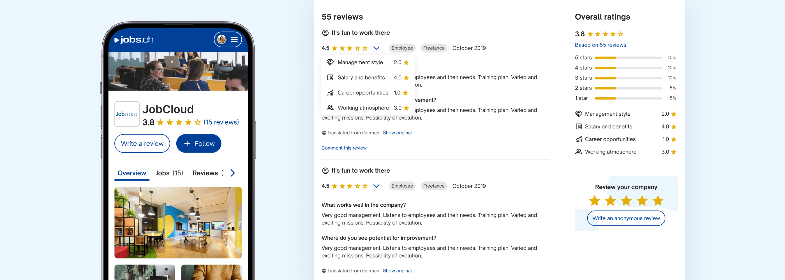
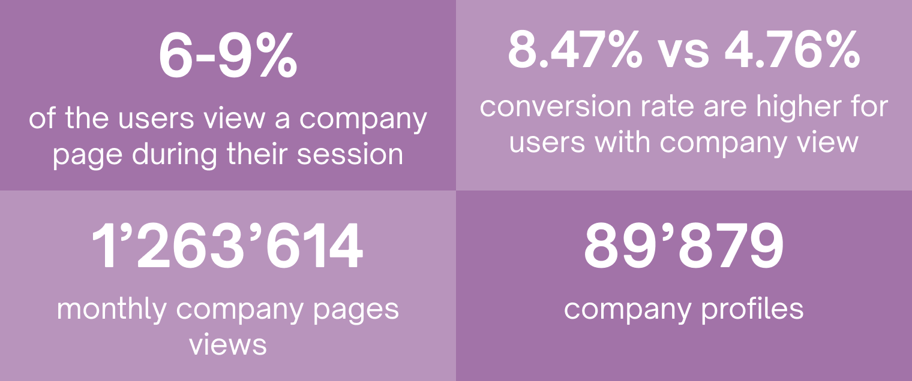
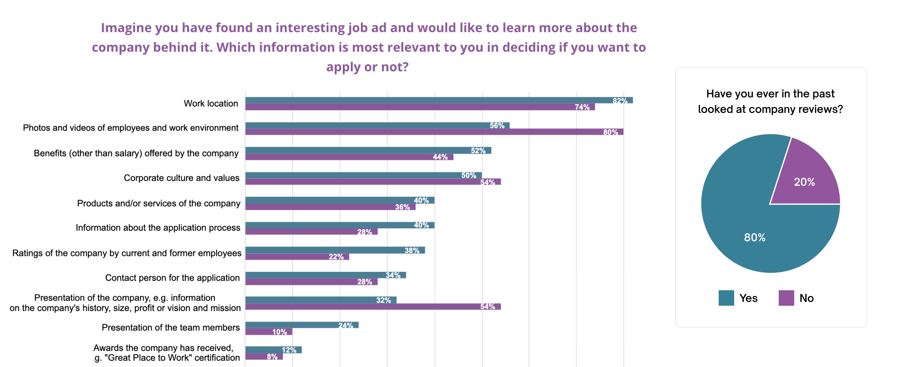
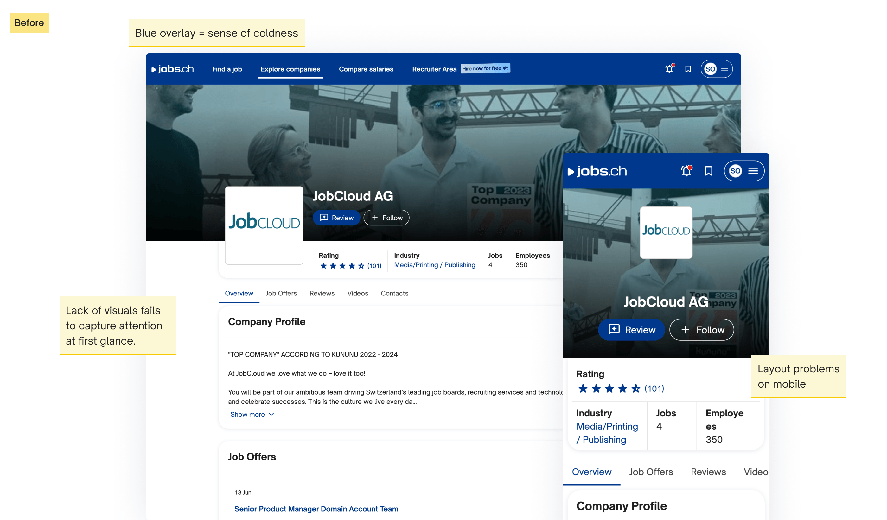
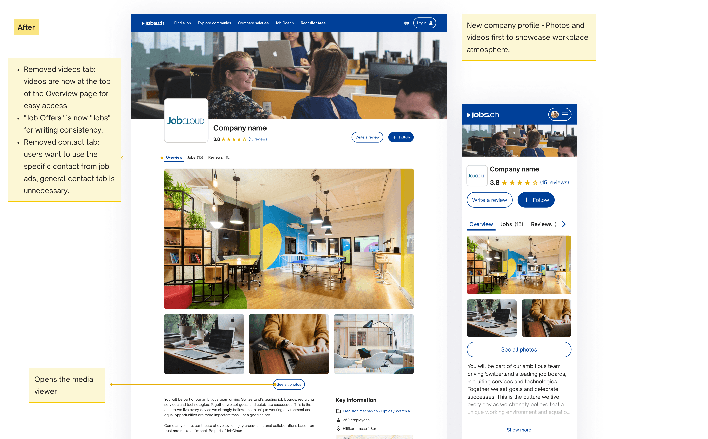
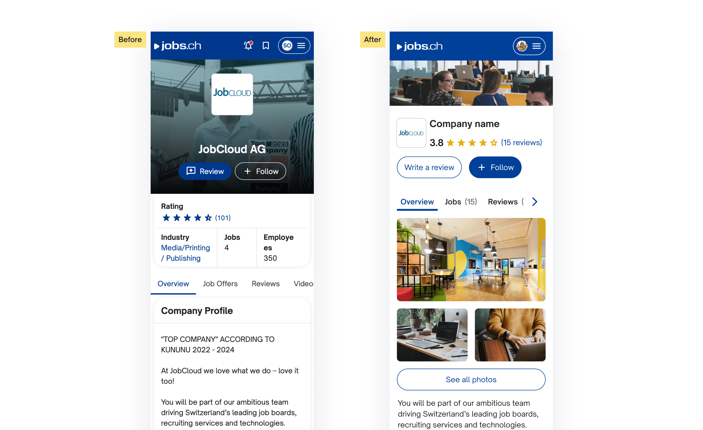
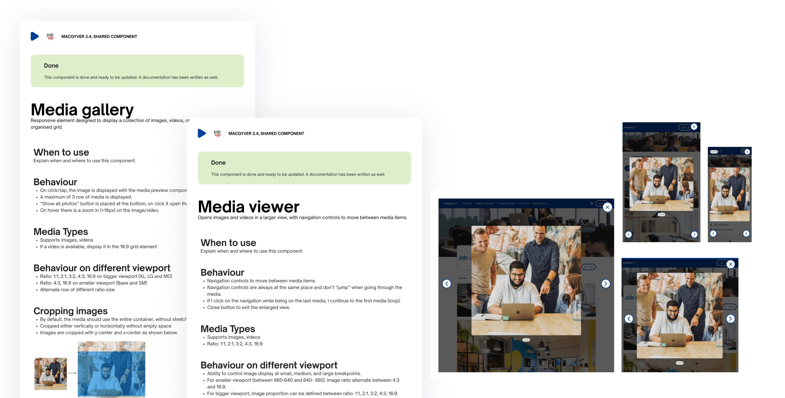
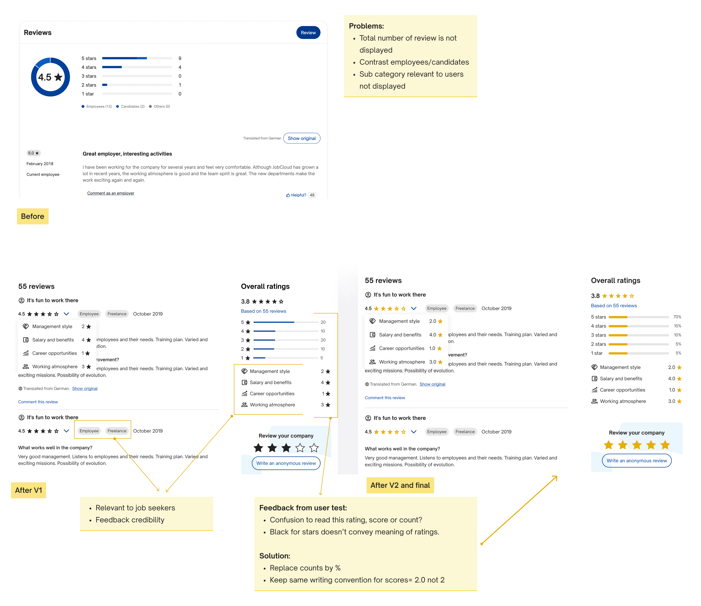
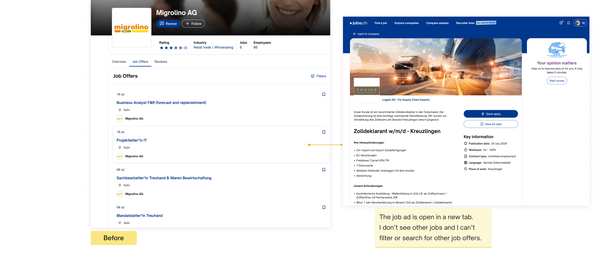
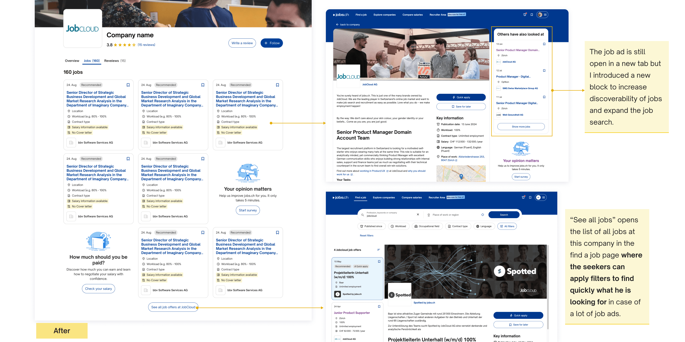

My role: I led design on this project, working with product managers and developers.
When: 2024.
What: Company profile pages for jobs.ch and jobup.ch.
jobs.ch and jobup.ch are JobCloud's leading job platforms in Switzerland, where job seekers browse thousands of job ads and decide which ones are worth applying to.
Job seekers already treat a company profile as a trust check before applying, and when jobs.ch and jobup.ch couldn't answer basic questions like what are the benefits or what it's actually like to work there, they left to check reviews on other platforms instead. Every one of those trips off-platform was a job seeker we risked losing to a competitor before they came back to apply.
I knew that job seekers who view a company profile are about 10% more likely to apply for a job, but the profiles on jobs.ch and jobup.ch hadn't been meaningfully updated in years. My goal was to redesign them to be informative and engaging enough that job seekers could make an informed decision without leaving the site.
Outdated company profiles were failing to engage job seekers and led to fewer applications. I redesigned the experience with clearer ratings, a media gallery, structured job listings, and surfaced benefit tags that were already being collected but never shown, to build trust and transparency.
To measure success, my team was targeting a 3% increase in job applications from company profile pages.

To better understand what job seekers really need, with the help of the research team, we launched a survey with 100 participants from the German and French-speaking regions of Switzerland. I wanted to find out what information they consider crucial when deciding to apply for a job.

The survey revealed that 80% of job seekers looked at reviews before applying to a job.
Mapping what job seekers said against what jobs.ch and jobup.ch actually showed made the gaps clear:
| Wanted feature | Currently available? | Notes |
|---|---|---|
| Presentation of the company (history/size/vision/mission…) | ✅ | But dependency with B2B to improve it |
| Photos and videos of employees and work environment | ❗ | Not visible - At the bottom of the page |
| Ratings | ❗ | To be improved |
| Benefits | ❌ | Not displayed but available B2B side |
Benefits were the clearest gap. Job seekers ranked them as one of the top things they wanted detail on. But on jobs.ch and jobup.ch, companies could only pick from a fixed list of generic benefit tags, with no way to explain what made their version of a benefit worth knowing about. Some of those tags were already being collected, but never shown on the job seeker facing profile at all.
Letting companies write their own benefit descriptions meant redesigning the B2B input tool and getting existing clients to fill it in. That work depended on B2B's roadmap and client adoption, not just my team, so it wasn't realistic for this first release. Instead, I scoped this round to what I could ship without that dependency: surfacing the benefit tags that were already being collected but never displayed. I proposed the free-text version as a phase 2 to the B2B team, backed by survey data showing benefits was the top thing job seekers wanted more detail on.
1. How could I quickly give job seekers a sense of what it would be like to work at the company using photos and videos, while making the overall page more engaging and visually appealing?
2. How could I improve the display of overall ratings and show other relevant information that job seekers need to assess a company?
3. Companies post an average of 8 to 40 job ads, making it hard for job seekers to find relevant positions. Data showed that users weren't using the filter option.



To catch user attention and give a taste of what it would be like to work there, photos and videos are displayed as a media gallery at the top of the page, ahead of the written company overview, since the survey showed visuals did more to help job seekers picture themselves in the role than text alone. To control the length, there is a button to see all media, which opens the media viewer.
New design components for the design system:
Media gallery and viewer: These are documented with guidelines, behavior, best practices, and accessibility rules, including alt text for images and keyboard navigation.
These changes created a more engaging and user-friendly experience for job seekers, allowing them to visualise their potential work environment and navigate the site more efficiently.


The original ratings widget had three problems: it didn't show the total number of reviews, it relied on colour alone to distinguish employee, candidate, and other reviewers (a contrast issue for anyone who couldn't easily tell the dots apart), and it never showed the sub-category ratings, management, salary and benefits, career opportunities, working atmosphere, that job seekers said mattered most in the survey.
In V1, I made three changes: added the number of reviews, replaced the colour-coded reviewer legend with a reviewer tag on each review (like "Employee" or "Candidate") so people no longer had to rely on colour to tell who left it, and surfaced the sub-category ratings job seekers had asked for. Both changes tested well: the sub-category ratings were directly useful to how job seekers evaluate a company, and the reviewer tag made reviews feel more credible.
What user testing on V1 found:
I iterated on V1 based on that feedback, solution for V2:


On average, a company has 8 job ads. Nevertheless, jobs.ch and jobup.ch have paying clients with up to 40 job ads. How do job seekers find the job that fits them in the current solution? Do they use the filter button? Data shows that they don't. Because it's not used, I decided to remove this filter option and find another solution to help job seekers see clearly in case of multiple job ads.
Solution:
{kind=link}
{kind=link}
{kind=link}
{kind=link}
{kind=link}
{kind=link}
{kind=link}
{kind=link}
{kind=link}